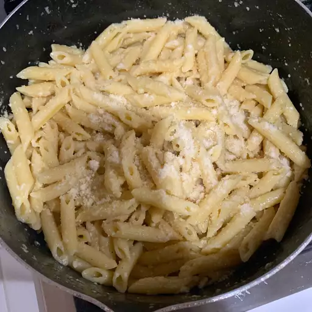

Buttered Noodles

Description
These buttered noodles area great midday lunch or dinner if you're trying to have a quick simple meal that will make your taste buds happy.
Using minimal ingredients and minimal time to boot this is going to be a dish you go back to again and again.
With such a blanks slate there are endless possibilities to the way you can customize with your own veggies, cheese, sauces or spices.
Ingredients
- 1 (16 ounce) package fettuccine noodles
- 6 tablespoons butter, cut into pieces
- 1/3 cup grated Parmesan cheese
- salt and ground black pepper to taste
Steps
-
Fill a large pot with lightly salted water and bring to a rolling boil. Stir in fettuccine, bring back to a boil, and cook pasta over medium heat until tender yet firm to the bite, 8 to 10 minutes. Drain and return pasta to pot.
-
Mix butter, Parmesan cheese, salt, and pepper into pasta until evenly combined.